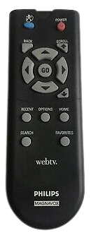
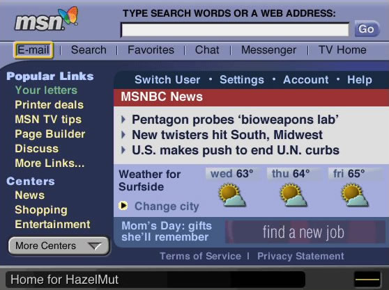

Wait, no mouse?
How do you surf the web without a mouse? With a remote controller of course!

The whole concept of WebTV is 'how can we make browsing web similar to the old American pastime of watching TV?'
You have just booted up WebTV. You take a seat on the couch with your trendy wireless keyboard placed on your lap for easy access. Fast-forward the 15 minutes it takes to connect to the internet and load your homepage. You see a screen that looks a little something like this:

See the yellow box around "E-mail"? That's basically your cursor. Using the left, up, down and right arrows, you could navigate to each hyperlink on the page. When the box was around what you wanted to click on, you simply clicked the "Go" button. Easy! Fun! Right?
If you're thinking "this sounds like a UX nightmare", you would be correct. But for it's time, it wasn't terrible.